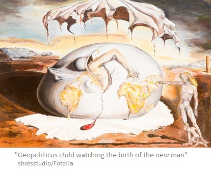

O que é imagem?
-
Quando falamos em imagem, a primeira coisa que nos vem à cabeça são desenhos, pinturas, gravuras, fotografias e até mesmo cinema e televisão, embora essas duas últimas não contenham apenas imagens, mas também falas, textos escritos, sons e músicas.
Sem negar que todas essas formas de expressão humanas são, de fato, imagens, a palavra “imagem” não se limita ao campo do visual. O espectro de significados dessa palavra abrange outras formas de expressão que não são visuais. Ela também é empregada no campo do som e da música, assim como podemos falar em imagens verbais, de que a linguagem poética é plena. Há ainda as imagens mentais e as oníricas.
-
Saussure, criador do estruturalismo, diferenciou as duas faces indissociáveis do signo linguístico: de um lado, o significado ou conteúdo e, de outro, o significante (definido por ele como a “imagem acústica” de uma palavra, como casa, carro ou quaisquer outros vocábulos da língua). Para significar, todas as palavras devem estar encarnadas em um conjunto significante que nos permite diferenciar casa de caça. Embora o linguista suíço use a expressão “imagem acústica”, ela não tem nada de visual, pois se expressa sonoramente.
Do mesmo modo, a expressão “imagem sonora” é muito empregada não só na música como também na sonoridade. A sequência de uma melodia desenha uma imagem, embora seja invisível. No universo do som, imagens são abundantes – por exemplo o famoso som de um carro Ferrari acelerando.
-
A literatura, em especial os textos poéticos, é povoada de imagens verbais, pois as palavras têm o poder de sugerir e evocar imagens, como se pode perceber em versos como “Minha terra tem palmeiras, / Onde canta o sabiá” (“Canção do exílio”, de Gonçalves Dias), ou canções como “Arco-íris”, de Jorge Vercillo e Filó Machado.
Além disso, existem as imagens mentais. Muitas das frases que dizemos ou ouvimos têm significado para nós porque são traduzidas mentalmente em imagens. Vejamos o exemplo de uma frase qualquer: “A jovem foi ao supermercado às 5h em ponto da tarde”. A compreensão dessa frase implica que se produza em nossa mente, mesmo que de maneira vaga, uma imagem capaz de traduzir esse conteúdo para nós.
O que dizer, então, das imagens oníricas? Nossos sonhos podem conter palavras, mas a maior parte deles é composta de imagens, por mais fugidias, estranhas e enigmáticas que sejam, como “A Queda”, do pintor belga René Magritte.
-
Veja outro exemplo.
